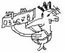
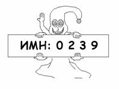

1028. Марсиане
Люди Марса были обнаружены
учеными Земли в 2099 году. Это открытие вызвало бурный рост исследования жизни
марсиан. Как оказалось, они живут группами в городах.
Города, как это ни странно, не имеют имени, а имеют свой номер N, и по нему их различают.
Каждому жителю города с номером N
выдается табличка – персональный идентификационный марсианский номер (ИМН). По
этой табличке, очевидно, можно было сказать многое о жителе: город, улицу
обитания и дом, и другие немаловажные сведения. Исследования этих табличек
учеными Земли привело к интересным фактам: на каждой табличке жителей города N написана возрастающая
последовательность целых чисел, которая начинается числом 0, и заканчивается числом N+1. Кроме того, каждое
следующее число не более чем на K
больше предыдущего. Так как все таблички различные, у ученых возникло разумное
желание узнать, какое максимальное количество марсиан может проживать в городе с номером N.
Входные данные:
На первой строке теста находятся два числа – N и K ().
Выходные данные:
Выходной файл должен содержать одно число –
максимальное количество марсиан, которые теоретически могут проживать в городе N.
Пример:
|
Пример теста |
Пример ответа |
|
3 5 3 5 5 5 1 34 29 61 29 |
24 31 1 17179869072 2305842936199249938 |
Источник: Ленинградская областная олимпиада 2002